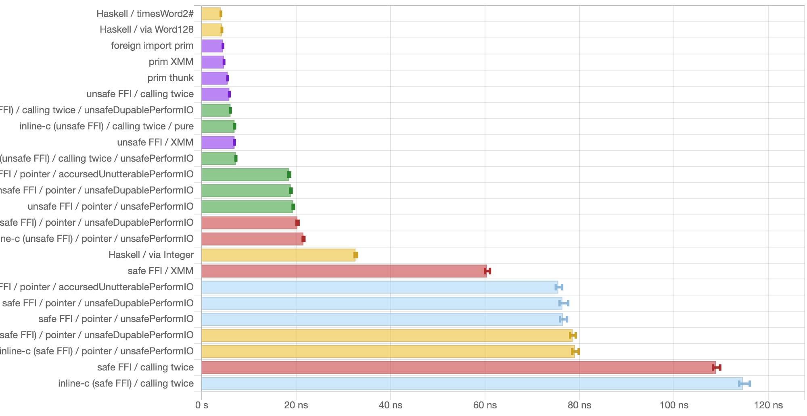

Low-level Haskell: The cursed way to emulate inline assembly in Haskell/GHC, or how to return multiple values from a foreign function
This article is an English version of my earlier post “【低レベルHaskell】Haskell (GHC) でもインラインアセンブリに肉薄したい！” (in Japanese). The translation was assisted by AI (if you don’t like reading AI-generated content, please read the Japanese version!).
Modern CPUs have many instructions specialized for particular purposes. Examples include SIMD, instructions useful for hashing and cryptography, and a variety of others. C and C++ have inline assembly and intrinsics, which let you write code that takes advantage of such instructions.
Haskell (GHC), on the other hand, has no such mechanism. But that’s no reason to give up just yet. Let’s find a way to invoke obscure CPU instructions from Haskell, and as efficiently as possible.
First, let me list a few CPU instructions that would be nice to use from Haskell.
The subject: the high and low halves of a product of 64-bit integers
Consider computing the product of two 64-bit integers, obtaining both the high 64 bits and the low 64 bits (128 bits in total).
The ordinary multiplication found in C and Haskell, (*) :: Word64 -> Word64 -> Word64, can only compute the low 64 bits. At the machine-code / assembly level on x86, however, the high 64 bits are computed alongside the product as well.
For this kind of processing — “easy at the machine-code level, but non-trivial at the C or Haskell level” — we’d like to use inline assembly or intrinsics.
(Actually, GHC has an intrinsic timesWord2# :: Word# -> Word# -> (# Word#, Word# #), so you can do this in one shot using it. I chose this subject anyway so that we can measure how much slower the alternatives get compared to a GHC intrinsic.)
As another subject, carry-less multiplication (polynomial multiplication over a finite field) would also be useful for certain purposes. I won’t go into detail in this article, but I’ve placed the test results in the repository.
In C
GCC/Clang have the __int128 type, so you can compute this in one shot using it. No inline assembly or intrinsics required.
unsigned __int128 wideningMul(uint64_t a, uint64_t b)
{
return (unsigned __int128)a * (unsigned __int128)b;
}If we deliberately wrote it with inline assembly, it might look like this:
uint64_t wideningMul_inlasm(uint64_t a, uint64_t b, uint64_t *outHigh)
{
uint64_t lo, hi;
asm("movq %2, %%rax;"
// mulq computes the product of %rax and the operand (here %3),
// placing the high 64 bits in %rdx and the low 64 bits in %rax
"mulq %3;"
"movq %%rax, %0;"
"movq %%rdx, %1;"
: "=r"(lo), "=r"(hi)
: "r"(a), "r"(b)
: "%rax", "%rdx");
*outHigh = hi;
return lo;
}How to return multiple values
Now, this operation takes two uint64_ts and returns a 128-bit value — that is, two uint64_ts. Since C’s syntax has no multiple-value return, you have to choose one of the following ways to return the values:
- Return a struct by value: define a struct like
struct uint128 { uint64_t lo, hi; }and return it by value.- Returning
unsigned __int128by value corresponds to this internally. See the x86_64 ABI for details.
- Returning
- Take and pass a pointer: take the location where the second and later return values should be stored as a pointer argument.
- Example: the
wideningMul_inlasmfunction I wrote earlier.
- Example: the
As an example of the former, the C standard div, ldiv, and lldiv functions return a {,l,ll}div_t struct by value.
The advantage of returning a struct by value is that, depending on the ABI, if the struct is small the values can be returned while kept in registers.
The disadvantage, on the other hand, is that other languages’ C FFI may not support it. In fact, GHC’s current C FFI does not support passing structs by value.
There is a proposal to make C structs passable by value through the FFI, but it has seen no movement:
- c structures · Wiki · Glasgow Haskell Compiler / GHC · GitLab
- Support C structures in Haskell FFI (#9700) · Issue · ghc/ghc
Using the C FFI (with a pointer)
Safe FFI
When there’s something Haskell can’t do, let’s borrow the power of another language! To that end, Haskell has an FFI. With it, you can call functions written in C.
Let’s give it a try right away:
#include <stdint.h>
extern uint64_t wideningMul_with_ptr(uint64_t a, uint64_t b, uint64_t *outHigh)
{
unsigned __int128 result = (unsigned __int128)a * (unsigned __int128)b;
*outHigh = (uint64_t)(result >> 64);
return (uint64_t)result;
}As I wrote earlier, the current GHC FFI can’t pass structs by value, so we’ll pass one of the return values via a pointer.
The Haskell side looks like this:
foreign import ccall "wideningMul_with_ptr"
c_wideningMul_with_ptr :: Word64 -> Word64 -> Ptr Word64 -> IO Word64
wideningMulWithPtr :: Word64 -> Word64 -> Word128
wideningMulWithPtr !a !b = unsafePerformIO $ do
Marshal.alloca $ \outHigh -> do
lo <- c_wideningMul_with_ptr a b outHigh
hi <- peek outHigh
return $ Word128 hi loDealing with a pointer means performing IO in order to allocate space and read out the value. However, the operation as a whole (“multiplying two 64-bit integers”) can be considered pure, so I’ve used unsafePerformIO to write it as a pure function1.
(By the way, for the Word128 type I used the Data.WideWord.Word128 type from the wide-word package.)
Trying it out:
> wideningMulWithPtr 123 456
56088
> 123 * 456
56088
> wideningMulWithPtr (2^63) (2^62) -- using a CPU instruction
42535295865117307932921825928971026432
> 2^125 -- computing with arbitrary-precision arithmetic
42535295865117307932921825928971026432So it seems to be computing correctly.
If writing the C code in a separate file is a hassle, using a package like inline-c, as in
- @tanakh’s article “Haskellにインラインアセンブリを書く” (Writing inline assembly in Haskell, in Japanese)
might be one option.
Unsafe FFI
Now, Haskell’s FFI has a concept called the safety level. The default is safe, which means “it is safe for the called external code to call back into Haskell functions.”
The opposite of safe is unsafe, which means “who knows what happens if the called external code calls back into Haskell.”
An unsafe FFI carries risk, but in exchange it can be expected to have lower overhead.
You specify the safety level by writing safe or unsafe right after the calling convention in a foreign import declaration:
foreign import ccall unsafe "wideningMul_with_ptr"
c_wideningMul_with_ptr :: Word64 -> Word64 -> Ptr Word64 -> IO Word64When using the inline-c package, you use the quasiquoters (exp, pure, block) found in Language.C.Inline.Unsafe.
Using the C FFI (calling twice)
In the previous section, we went through a pointer in order to return multiple values from a function written in C.
However, passing values via a pointer is presumably slower than passing them in registers[citation needed]. You also need to allocate a memory region (GHC’s alloca function allocates on the heap, not the stack). If we can pass the values without using a pointer, so much the better.
Fortunately, our subject — “multiplying 64-bit integers” — is a low-cost operation. Given that, wouldn’t it be acceptable to perform the same computation for each of the high 64 bits and the low 64 bits separately?
// compute the low 64 bits
extern uint64_t wideningMul_lo(uint64_t a, uint64_t b)
{
unsigned __int128 result = (unsigned __int128)a * (unsigned __int128)b;
return (uint64_t)result;
}
// compute the high 64 bits
extern uint64_t wideningMul_hi(uint64_t a, uint64_t b)
{
unsigned __int128 result = (unsigned __int128)a * (unsigned __int128)b;
return (uint64_t)(result >> 64);
}foreign import ccall unsafe "wideningMul_lo"
c_wideningMul_lo :: Word64 -> Word64 -> Word64
foreign import ccall unsafe "wideningMul_hi"
c_wideningMul_hi :: Word64 -> Word64 -> Word64
wideningMul2 :: Word64 -> Word64 -> Word128
wideningMul2 !a !b = Word128 (c_wideningMul_hi a b) (c_wideningMul_lo a b)I’ll compare the “call twice and keep everything in registers” approach against the “pass via a pointer” approach later.
Using the C FFI (using SIMD registers)
GHC has no 128-bit integer type that the FFI can handle, but it can use 128-bit-wide SIMD registers — things like Word64X2#. Using one, you can pass 128 bits of data in a register in a single function call (in the System V ABI’s case).
extern __m128i wideningMul_xmm(uint64_t a, uint64_t b)
{
union {
__m128i m128;
unsigned __int128 u128;
} u;
u.u128 = (unsigned __int128)a * (unsigned __int128)b;
return u.m128;
}{-# LANGUAGE MagicHash #-}
{-# LANGUAGE UnboxedTuples #-}
{-# LANGUAGE UnliftedFFITypes #-}
foreign import ccall unsafe "wideningMul_xmm"
c_wideningMul_xmm :: Word64 -> Word64 -> Word64X2#
wideningMulXMM :: Word64 -> Word64 -> Word128
wideningMulXMM !a !b = case unpackWord64X2# (c_wideningMul_xmm a b) of
(# lo, hi #) -> Word128 (W64# hi) (W64# lo)This isn’t a general-purpose way to return multiple values, but I brought it up because this particular subject happens to fit in 128 bits.
Black magic: foreign import prim
As I wrote earlier, current GHC cannot handle C functions that return a struct by value. And when you want to return multiple values from external code, you need to use a pointer or go through multiple function calls. However, GHC does have a means of returning values from external code using multiple registers (multiple-value return): that is foreign import prim.
About GHC’s PrimOps
An operation that corresponds directly to a machine instruction, such as integer addition, is called a primitive operation in GHC parlance (in other words, a GHC intrinsic). For integer addition, the function
(+#) :: Int# -> Int# -> Int#is defined. In the old days, the intrinsics (pseudo-)defined in the GHC.Prim module of the ghc-prim package were exposed via the GHC.Exts module of the base package, and you used those. But due to the decoupling of the base package from GHC, GHC.Exts has been frozen, and the newest intrinsics are now available via the GHC.Internal.Exts module of the ghc-internal package or the GHC.PrimOps module of the ghc-experimental package.
Well, since we want to define our own intrinsics, there’s no need to go into detail about how to use existing ones.
According to the GHC Wiki page (prim ops · Wiki · Glasgow Haskell Compiler / GHC · GitLab), GHC’s intrinsics come in three kinds: inline PrimOps, out-of-line PrimOps, and foreign out-of-line PrimOps (foreign import prim).
- inline PrimOps: expanded into an instruction sequence on the spot. Hardcoded into GHC.
- out-of-line PrimOps: follow a dedicated calling convention. Hardcoded into GHC.
- foreign out-of-line PrimOps: follow a dedicated calling convention. Library developers can define them via
foreign import prim. Intended for libraries bundled with GHC.
Of these (or rather, among all the methods available in Haskell for hitting a specific CPU instruction), inline PrimOps are presumably the lowest-cost, but modifying GHC just to use a single instruction is quite a big undertaking2. Hence, foreign out-of-line PrimOps are relatively easy to use.
Using foreign import prim
An example of Haskell code using foreign import prim looks like this:
{-# LANGUAGE GHCForeignImportPrim, UnliftedFFITypes, MagicHash, UnboxedTuples #-}
foreign import prim "wideningMul_prim"
wideningMul_prim# :: Word# -> Word# -> (# Word#, Word# #)
wideningMul :: Word64 -> Word64 -> Word128
wideningMul (W64# a) (W64# b)
= case wideningMul_prim# a b of
(# lo, hi #) -> Word128 (W64# hi) (W64# lo)At first glance, the only change is that the foreign import calling convention went from ccall to prim. What a relief! (The #s on the type names and tuples are common in low-level Haskell, so nothing to be surprised about at this point. You can also write ccall FFI that uses # all over the place.)
As for the GHC extensions used: to use foreign import prim, you need the GHCForeignImportPrim extension3. Also, the arguments and return values can basically only be unlifted types, so the UnliftedFFITypes extension is required too. MagicHash and UnboxedTuples go without saying.
There’s a brief explanation of the GHCForeignImportPrim extension in the User’s Guide, but no detailed explanation of the calling convention.
I’m about to present code that touches GHC’s internal calling convention, but this is completely unsupported and may stop working depending on GHC’s configuration or differences between minor versions.
In fact, I have changed GHC’s internal calling convention with my own hands before. That was the first of my contributions to GHC to get merged.
- Fewer FP registers than available are used for parameter passing on AArch64 (#17953) · Issue · ghc/ghc
- Support auto-detection of MAX_REAL_{FLOAT,DOUBLE}_REG up to 6 (#17953) (!5117) · Merge requests · Glasgow Haskell Compiler / GHC · GitLab
If you make use of foreign import prim for some reason, I recommend always keeping an eye on the development status of GHC proper.
Implementing a foreign out-of-line PrimOp
Now that the Haskell side is ready to use our own PrimOp, the next step is to prepare the implementation.
GHC’s out-of-line PrimOps are apparently expected to be written in Cmm, but
- Cmm is hard to understand!
- It seems you can’t use inline assembly or architecture-dependent intrinsics from Cmm!
so we’ll write it directly in assembly. (As I’ll mention later, besides Cmm and raw assembly there’s a third path: messing with LLVM IR.)
GHC’s calling convention for PrimOps, in the case of x86_64, is roughly:
- Arguments and return values are basically passed in registers. The first is
%rbx, the second is%r14, the third is%rsi, the fourth is%rdi, … - To return to the caller, do
jmp *(%rbp).
For the register usage, see rts/include/stg/MachRegs/x86.h.
The actual assembly code looks like this:
.globl _wideningMul_prim
_wideningMul_prim:
## first argument: %rbx
## second argument: %r14
movq %rbx, %rax
mulq %r14 ## compute the product of %rax and %r14, putting the high half in %rdx and the low half in %rax
movq %rax, %rbx ## put the first return value (lo) in %rbx
movq %rdx, %r14 ## put the second return value (hi) in %r14
jmp *(%rbp)In GHC’s internal calling convention, functions (and continuations) are always tail-called, so registers — except those reserved for the STG machine — are free to use.
By the way, if you really want to write it in C, there’s apparently a method: “write it as a function with a specific prototype, compile it with Clang, and edit the LLVM IR output by -S -emit-llvm to change the calling convention to ghccc4.” See the links below for details.
A collection of links that may be helpful:
- Parsing Market Data with Ragel, clang and GHC primops - Ten Cache Misses: modifies the LLVM IR that clang emits to use GHC’s calling convention
- haskell - foreign import prim call to LLVM - Stack Overflow: same as above
- haskell - Using
foreign import primwith a C function using STG calling convention - Stack Overflow: same as above - Almost Inline ASM in Haskell With Foreign Import Prim - Brandon.Si(mmons): writes x86_64 assembly directly without going through LLVM
- I referred to this article heavily when writing this post
- The code is here → jberryman/almost-inline-asm-haskell-example: An example of using
foreign import primin ghc haskell to call assembly with low overhead
Implementing a foreign out-of-line PrimOp (improved)
The assembly code above has a few issues.
- The function name we’re implementing this time is
wideningMul_prim, but I gave its assembly name (symbol name) a leading underscore as_wideningMul_prim. Whether a leading underscore is added generally depends on the platform (OS). For example, it is added on macOS but not on Linux. - When “returning from the function” I used
jmp *(%rbp), but this doesn’t work if GHC is configured with--disable-tables-next-to-code.
For the first problem, when an underscore is added a macro LEADING_UNDERSCORE is defined in ghcconfig.h, so you can use that. If you change the assembly source’s extension to an uppercase .S, the preprocessor becomes available, and on GHC 9.12 and later you can #include "ghcconfig.h" (I made the change that enables this). Note that the assembly source’s filename must not start with an uppercase letter, or GHC will mistakenly think a Haskell module name was given on the command line (Foo.S won’t do; it must be foo.S).
#include "ghcconfig.h"
#if defined(LEADING_UNDERSCORE)
#define SYMBOL(name) _##name
#else
#define SYMBOL(name) name
#endif
.globl SYMBOL(wideningMul_prim)
SYMBOL(wideningMul_prim):
...As for the second problem, what I’m calling “returning from the function” means “invoking the continuation pushed on top of the STG stack (%rbp on x86_64).” When GHC is configured with --enable-tables-next-to-code (TNTC), the address of the continuation object is the address of the code itself, but otherwise the address of the code is stored at the start of the continuation object. For this layout, refer to rts/include/rts/storage/InfoTables.h.
// with --enable-tables-next-to-code
struct StgInfoTable {
...
// <- this address is pushed on the STG stack
StgCode code[]; // machine code
};
// with --disable-tables-next-to-code
struct StgInfoTable {
// <- this address is pushed on the STG stack
StgFunPtr entry; // pointer to machine code
...
};This too can be distinguished using the TABLES_NEXT_TO_CODE macro in ghcconfig.h.
...
#if defined(TABLES_NEXT_TO_CODE)
jmp *(%rbp)
#else
movq (%rbp),%rax
jmp *(%rax)
#endifBesides this, GHC also has a configuration called an unregisterised build, and I think the method described here won’t work in that case either.
Combining a C struct return with foreign import prim (the thunk approach)
When the work fits in a single instruction as it does here, hand-coding the body of the PrimOp in assembly is no big deal, but for somewhat more complex code you’ll want to write it in a high-level language like C.
So consider the following approach:
- Write the body of the processing as a C function (using struct return by value).
- Write a PrimOp in assembly that calls the C function.
- Call the assembly-written one from Haskell via
foreign import prim.
In other words, you absorb the difference between the C calling convention and the GHC calling convention with a small amount of assembly code in between. Let’s call this intervening code a thunk. (In Haskell, “thunk” tends to evoke the lazy-evaluation sense, but this is a different sort of thunk.)
The C part looks like this:
// __int128 is equivalent to struct { uint64_t lo, hi }; on System V/x86_64 ABI
extern unsigned __int128 wideningMul_uint128(uint64_t a, uint64_t b)
{
return (unsigned __int128)a * (unsigned __int128)b;
}The thunk written in assembly looks like this:
#include "ghcconfig.h"
#if defined(LEADING_UNDERSCORE)
#define SYMBOL(name) _##name
#else
#define SYMBOL(name) name
#endif
.globl SYMBOL(wideningMul_thunk)
SYMBOL(wideningMul_thunk):
## GHC:
## first argument: %rbx
## second argument: %r14
## C:
## first argument: %rdi
## second argument: %rsi
movq %rbx, %rdi
movq %r14, %rsi
subq $8, %rsp
callq SYMBOL(wideningMul_uint128)
addq $8, %rsp
## C:
## first return value: %rax
## second return value: %rdx
## GHC:
## first return value: %rbx
## second return value: %r14
movq %rax, %rbx
movq %rdx, %r14
#if defined(TABLES_NEXT_TO_CODE)
jmp *(%rbp)
#else
movq (%rbp),%rax
jmp *(%rax)
#endifWhen you call the C function, you might worry that the registers used by the STG machine get clobbered, but in the x86_64 case the STG registers are deliberately mapped onto the callee-saved registers of the C calling convention, so there’s no need to save them (in both the System V ABI and the Microsoft calling convention).
You also need to check the alignment of the stack pointer %rsp. In both the x86_64 System V ABI and the Microsoft calling convention, the stack pointer must be a multiple of 16 at the point callq executes. In GHC’s calling convention, you can assume that on entry to a function the stack pointer has the form 16 * n - 8. That is, it mimics the state right after issuing a callq instruction with the stack pointer aligned to a multiple of 16. In recent GHC this has become 64 * n - 8 due to AVX (a change I made myself). For details, see GHC’s rts/StgCRun.c.
To state the conclusion about the stack pointer: subtract 8 from %rsp just before the callq instruction and you’ll satisfy the requirements of the C calling convention.
This is wishful thinking, but it would be fun to have a Haskell library that auto-generates thunks like this with Template Haskell, so you could directly call C functions that pass (return) structs by value. Somebody please make it!
Benchmark
I’ve considered various ways to implement “obtain the product of two 64-bit integers as a 128-bit integer.” So let’s compare them. The comparison targets are:
- Use Haskell’s arbitrary-precision arithmetic (
Integertype). - Convert the operands to the
Word128type of thewide-wordpackage, then multiply.- The
wide-wordpackage internally usestimesWord2#.
- The
- Use
timesWord2#fromGHC.Prim.- Internally to GHC, this is a kind of inline PrimOp called
WordMul2.
- Internally to GHC, this is a kind of inline PrimOp called
- Use the C FFI.
- Safe FFI / Unsafe FFI
- Using a pointer (unsafePerformIO / unsafeDupablePerformIO / ****PerformIO) / calling twice / using SIMD registers
- Use
foreign import prim.- Implemented in assembly
- The thunk approach
Since GHC already has the built-in timesWord2# for the operation of multiplying two 64-bit integers to get 128 bits, we can also compare “how much difference there is between inline PrimOps and (foreign) out-of-line PrimOps.”
Let me predict which is fastest: the inline PrimOp timesWord2# should be fastest, followed by foreign out-of-line PrimOps (foreign import prim). I have a feeling that Integer’s arbitrary-precision arithmetic is slowest.
Here are the actual benchmark results:

If you’d rather read it as text, see here.
To summarize:
- The fastest is GHC’s built-in
timesWord2#function, at about 4.0ns.Word128, which internally usestimesWord2#, achieves equivalent performance. - The runner-up is
foreign import prim(assembly only), at about 4.5ns. The thunk approach and “unsafe FFI + calling twice without a pointer” follow it (~5.8ns). - Using XMM registers with unsafe FFI is about 7.0ns.
- Next is “unsafe FFI + passing a pointer,” at about 19ns. Using unsafeDupablePerformIO or the unspeakable blasphemous one instead of unsafePerformIO gives roughly the same.
- Next is the one using
Integer’s arbitrary-precision arithmetic, at about 32.5ns. - Dead last is “safe FFI,” at over 60ns. The reason “calling twice” is slower than “passing a pointer” is presumably that the cost of safe FFI outweighed the cost of passing a pointer.
The source code I used is on GitHub. The benchmark was run on WSL2 on my Zen4 machine.
Closing thoughts / summary
Unsurprisingly, the version compiled to an inline instruction sequence built into GHC is fastest, but we found that foreign import prim achieves performance that comes close to it. (Since this was a microbenchmark, the gap might widen in more practical examples.)
What’s surprising is that “unsafe FFI + calling twice without a pointer” holds its own against foreign import prim. In other words, the C FFI can rival foreign import prim depending on how you do it. If the performance difference is slight, choosing the C FFI over the black magic of foreign import prim would be a reasonable call.
Conversely, even when using the C FFI, if you needlessly use the safe level, it became slower than the “naively written in Haskell without using the CPU’s handy instructions” version.
When using the C FFI for speed, check that the safety level isn’t needlessly set to safe.
- NB: Use
safeif the foreign call runs for a long time or may call back into Haskell, since anunsafecall blocks GC.unsafeis best for short calls.
That, I think, is a fairly important lesson.
Those well-versed in Unsafe Haskell might think, “In this case you could use
unsafeDupablePerformIO, or even better,****PerformIO…” Don’t worry, I’ve included the results of those experiments at the end as well.↩︎If your change gets merged into the upstream GHC, the effort might pay off, but getting an intrinsic for a niche instruction merged into GHC requires a correspondingly convincing case. There was apparently an issue proposing to add AES instructions to GHC in the past, but it was closed as won’t fix.↩︎
A name that really gives off a “GHC-only! External libraries, keep out!” vibe.↩︎
ghccc is the name of GHC’s calling convention within LLVM (→ LLVM calling-conventions documentation). It used to be called cc10.↩︎